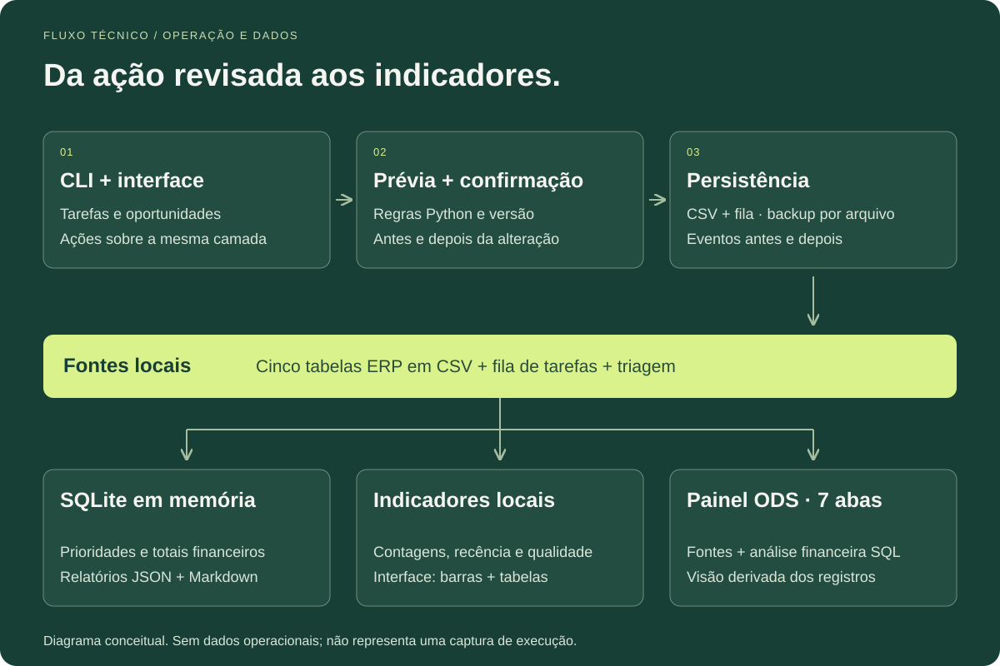
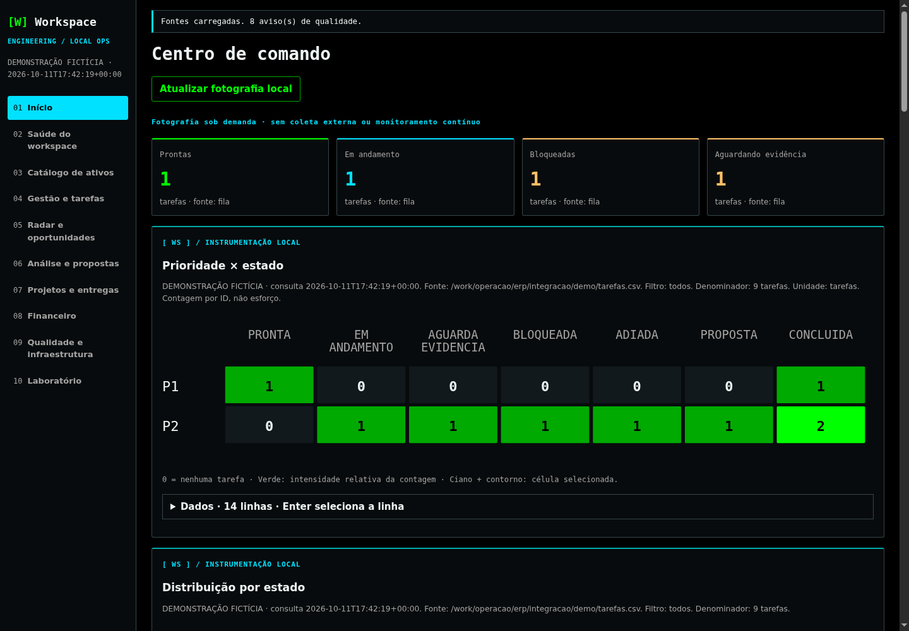
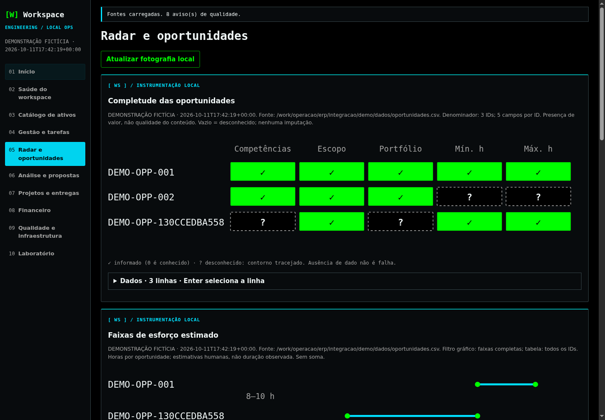
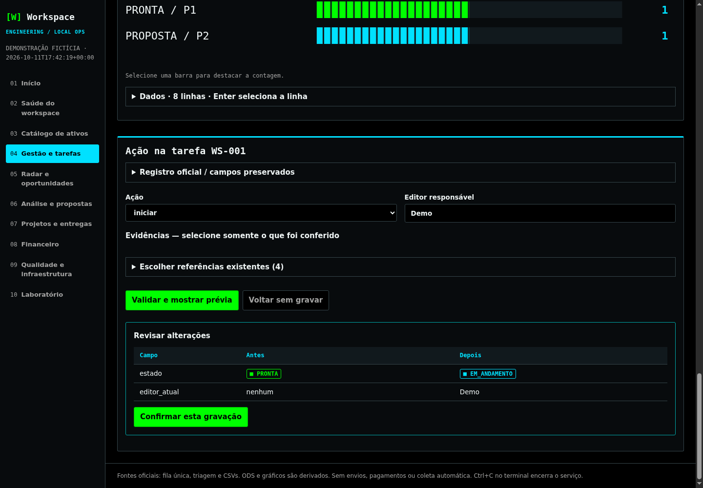
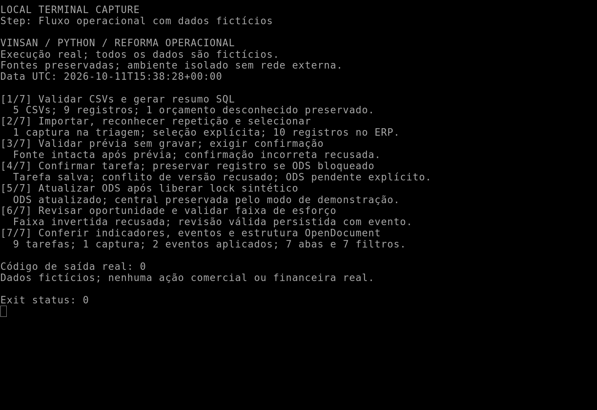
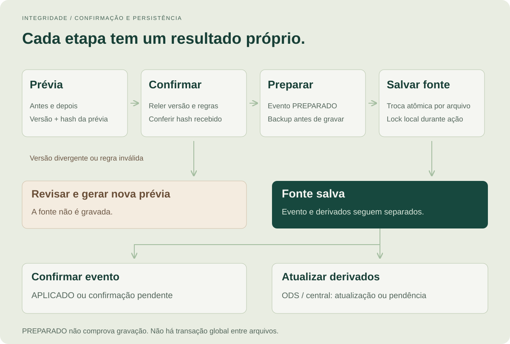

Uma infraestrutura local em Python que conecta tarefas, oportunidades, análise SQL e indicadores. Da prévia de uma alteração ao painel atualizado, cada etapa tem regras, evidências e um resultado que pode ser conferido.
Contexto
Projeto próprio · infraestrutura da operação freelance
Minha atuação
Modelagem de dados, automação, interface local e rastreabilidade
Estado apresentado
Demonstração isolada com dados fictícios
O desafio
Planilhas e documentos registram o trabalho, mas não explicam sozinhos o que está pronto, o que foi alterado ou por que um indicador mudou. A operação precisava transformar esses registros em ações consistentes, preservar o histórico e tornar pendências e falhas visíveis.
Minha contribuição
Evoluí meu pipeline Python para uma infraestrutura de operação local. Modelei regras de dados e ações de tarefa, conectei terminal e interface à mesma camada de domínio e implementei indicadores, eventos, backups e saídas derivadas. O case acompanha essa evolução com execuções reais em uma cópia fictícia do workspace.
Python
SQLite
HTTP local
JavaScript
D3.js
CSV / JSON
OpenDocument / ODS
unittest
01 / O TRABALHO
Modelar, validar e entregar.
01
Ações operacionais com prévia e confirmação
Do registro de progresso à conclusão, a mudança pode ser revisada antes de gravar.
A CLI e a interface local usam as mesmas funções Python para iniciar, registrar progresso, anexar evidência, bloquear, retomar e concluir tarefas. A revisão de oportunidades reutiliza os validadores do ERP.
A prévia mostra antes e depois. A confirmação depende da versão das fontes; uma edição concorrente exige nova leitura e revisão.
Backups, locks de edição e substituição atômica de cada arquivo ajudam a preservar o trabalho existente.
Valor do trabalho: Reduz a necessidade de editar CSVs manualmente e torna explícito o que cada ação altera.
02
Análise de dados com regras de interpretação
Indicadores que explicam o que contam e de onde vêm.
Cinco tabelas ERP passam por validações de formatos, estados e vínculos. O núcleo usa SQLite em memória para prioridades e agregados financeiros; a camada operacional calcula contagens, recência e completude dos registros.
Valores monetários passam por Decimal e centavos inteiros. Totais permanecem separados por moeda e tipo; valores desconhecidos não viram zero.
Matrizes D3 mostram prioridade × estado e presença de campos por oportunidade. Fonte, unidade, denominador e alternativa tabular acompanham os gráficos.
Valor do trabalho: Permite investigar a qualidade dos dados e interpretar os números sem confundir contagens com produtividade ou receita.
03
Observabilidade da própria operação
Saber o que mudou, o que falhou e o que precisa de revisão.
Eventos PREPARADO e APLICADO registram etapas da gravação. A interface atual reúne matrizes interativas, indicadores de qualidade e fotografias de diagnósticos, referências e hashes. A consulta relê as fontes; não executa testes ou monitoramento contínuo.
Uma ocorrência de qualidade vem acompanhada de fonte e detalhe; o mesmo registro pode produzir mais de uma ocorrência.
A resposta distingue registro salvo de painel desatualizado. Uma falha na geração do ODS pode ser tratada sem repetir a decisão já gravada.
Valor do trabalho: Facilita localizar problemas, conferir alterações e retomar uma rotina com contexto.
04
Automação com saídas úteis para outras pessoas
Terminal, interface e planilha trabalham sobre as mesmas fontes.
Comandos ws organizam consulta, revisão e atualização. JSON e Markdown atendem integração e leitura; o painel ODS combina CSVs validados, triagem e fila, reutilizando a análise financeira em sete abas. A central documental reúne as referências da operação.
Importação e seleção de oportunidades são etapas explícitas; repetir uma captura não deve duplicá-la.
ODS e central são derivados regeneráveis. Na demonstração, somente o ODS fictício é atualizado; a central real permanece preservada.
Valor do trabalho: Entrega uma rotina repetível e informação examinável no formato usado pela equipe.
02 / FLUXO E DECISÕES
Fontes claras. Saídas que podem ser conferidas.

Ações de tarefa e oportunidade passam pela mesma camada Python. A análise financeira usa SQLite em memória; os indicadores operacionais também leem fila e triagem. O ODS reutiliza fontes e análise, sem consumir o resumo JSON/Markdown.
Uma regra de negócio, duas formas de operar
Interface e CLI chamam a mesma camada Python. O JavaScript apresenta a prévia; os contratos e a decisão de gravar são validados novamente no servidor.
Indicadores descritivos, com denominadores
A matriz de completude mostra campos conhecidos e desconhecidos, sem imputar valores ou avaliar sua veracidade. A seleção nos gráficos é temporária e tem alternativa tabular; não altera os registros. A pontuação de triagem continua sendo uma heurística.
Persistência e derivados têm estados próprios
Salvar uma fonte, confirmar seu evento e atualizar ODS ou central são etapas distintas. A resposta informa falhas posteriores à gravação para evitar repetir uma ação já aplicada.
Simplicidade local com limites explícitos
CSV mantém os registros acessíveis e SQLite é usado em memória. Hashes, backups e locks protegem a rotina, mas não criam uma transação global entre arquivos. A coordenação de um editor por material continua necessária.
03 / EVIDÊNCIAS DA DEMONSTRAÇÃO
Execução local, escopo explícito.
As telas mostram a versão atual da interface: centro de comando, matrizes D3 e prévia tabular. As capturas de terminal e os arquivos do pipeline anterior continuam disponíveis, com seus horários e escopos identificados.
Demonstração: 11 out 2026 · interface capturada às 17:42 UTC
Interface atual em cópia isolada com dados fictícios, D3 local e rede externa desabilitada. Os registros de terminal às 15:38 UTC pertencem à rodada anterior.
94 / 94execuções de teste aprovadas na rodada anterior, preservadas como evidência histórica
7 abasno painel ODS, com sete filtros e fontes identificadas
Verificação
Resultado registrado
Escopo
Núcleo de dados
13 testes aprovados
Formatos, vínculos, estados, evidências, valores inválidos e agregação por moeda.
Integração, domínio e HTTP
59 testes aprovados
CLI, importação, seleção, operações com confirmação, edição concorrente, recuperação e handler HTTP por streams.
Diagnóstico e Radar
22 testes aprovados
5 de prontidão e 17 do Radar reutilizado. Fontes externas não foram consultadas.
Pipeline da reforma
7 etapas concluídas
Da validação à seleção, prévia, confirmação, conflito e recuperação de um painel desatualizado.
Dados e painel
7 abas e 7 filtros
9 registros ERP iniciais; 10 após a seleção. A fila contém 9 tarefas fictícias. Central real preservada.
Interface atual
D3, seleção e prévia conferidos
Capturas 1440 × 1000 e navegação desktop 1366 × 768. Fontes preservadas; a visão Radar ainda apresenta overflow a 390 px.
Os 94 resultados são execuções da rodada anterior, com cenários repetidos; não foram reexecutados para esta atualização visual. A nova conferência cobriu consulta, seleção de gráficos e prévia sem gravar. O aceite oficial do workspace permanece separado.
EXECUÇÃO LOCAL / REGISTRO DA DEMONSTRAÇÃO
01 / Centro de comando e matriz de tarefas
A interface atual reúne contagens de trabalho ativo e uma matriz de prioridade × estado. Cada célula abre a seleção correspondente de tarefas por clique ou teclado, mantendo os registros intactos.
Captura de 11/10/2026, 17:42 UTC. Amostra independente com nove tarefas fictícias. O gráfico informa a unidade e oferece os mesmos dados em tabela.
Tema escuro · D3 local · matriz interativa · 9 tarefas fictícias.

Captura nativa do centro de comando atual, com verde e ciano. Contagens por ID representam tarefas, não horas ou produtividade.
A matriz de oportunidades distingue campos informados de campos desconhecidos. As faixas de esforço apresentam estimativas por oportunidade e mantêm os escopos separados.
Três oportunidades fictícias, com cinco campos observados por ID. Presença de valor não comprova veracidade; zero é conhecido e campo vazio permanece desconhecido.
3 oportunidades · 5 campos por ID · valores ausentes visíveis.

Captura real da visão Radar da versão atual. A matriz D3 e sua legenda mostram o significado dos dados; a tabela expansível oferece leitura alternativa.
O formulário atual exibe a diferença entre Antes e Depois em uma tabela. A ação fictícia de iniciar foi validada e cancelada após a captura, preservando o estado da tarefa.
Prévia PRONTA → EM_ANDAMENTO em uma tarefa sintética. Esta rodada não confirmou gravações nem gerou novamente os derivados.
Prévia conferida · dados preservados · nenhuma ação confirmada.

Captura nativa da interface atual, com formulário e tabela de alterações. A confirmação continua sendo uma etapa explícita, posterior à revisão.
O pipeline valida dados, gera análises SQL, importa e seleciona uma oportunidade fictícia. Em seguida, exercita a prévia sem gravação, a confirmação, a recusa de uma versão antiga e a atualização dos derivados.
7 etapas sobre 5 CSVs. A seleção leva o ERP de 9 a 10 registros; 2 ações aplicadas geram eventos. O lock demonstrado é sintético e a central real não é regenerada. Execução anterior: 11/10/2026, 15:38 UTC.
7 etapas concluídas · conflito recusado · registro salvo com painel pendente · ODS atualizado depois.

Captura nativa do terminal durante execução real. A saída resume verificações do processo e dos artefatos; os dados são fictícios e os pixels não foram editados.
Registro preservado da execução anterior das suítes do núcleo ERP, integração, operações, handler HTTP, diagnóstico e Radar. Os cenários abrangem recusas, conflitos e recuperação em arquivos temporários.
13 testes do núcleo + 59 de integração, domínio, HTTP e terminal + 5 de diagnóstico + 17 do Radar. Há cenários herdados e repetidos. Os testes de handler usam streams; o navegador tem registro separado.
O projeto reúne engenharia de dados, análise descritiva, automação e observabilidade operacional em uma ferramenta de uso local. Demonstra como transformo controles dispersos em rotinas Python que outra pessoa consegue operar, conferir e manter.

Uma versão divergente interrompe a alteração. Após salvar a fonte, a confirmação do evento e a geração dos derivados têm estados próprios. PREPARADO sozinho não comprova aplicação; não há transação global entre arquivos.
05 / LIMITES E MATERIAIS
Escopo e materiais para consulta.
Projeto próprio, demonstrado com dados sintéticos. Não há medição de produtividade, receita ou resultado comercial atribuída ao case.
Observabilidade local por eventos, diagnósticos e indicadores; não há monitoramento contínuo, tracing distribuído ou alertas de produção neste recorte.
A análise é descritiva. Não inclui modelo preditivo, experimento causal ou treinamento de machine learning.
O serviço HTTP é local, iniciado manualmente. A sessão não representa autenticação individual nem validação de operação multiusuário.
Não há transação global entre CSV, evento e derivados. Backups locais e controle de edição não substituem a coordenação de acesso aos arquivos.
Os testes não comprovam autenticidade de documentos, conciliação bancária ou integração externa. ODS e central permanecem visões derivadas; editar a planilha não atualiza a fonte.
A interface atual foi conferida em desktop. Em 390 px, Início, Qualidade e Tarefas não apresentaram overflow da página; a visão Radar chegou a 489 px e ainda requer ajuste no projeto de origem.
As três telas atuais foram capturadas em 11/10/2026 às 17:42 UTC, sem editar pixels. Os dois terminais preservam as execuções anteriores às 15:38 UTC. Todas as amostras são fictícias.